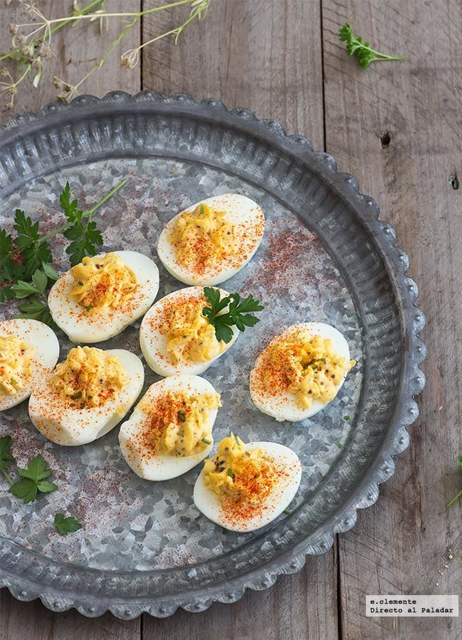

Huevos rellenos

Ingredientes para hacer huevos rellenos
- Huevo
- Harina de trigo
- Aceite de oliva
- Pan rallado
- atún
Preparación
- Cocer los huevos
- Añadir la clara cocida junto el atún
- Partrir el huevo y rellenarlo
- Añadir mayonesa
- Enfriar durante 12 horas
Back to top
Back to main Menu